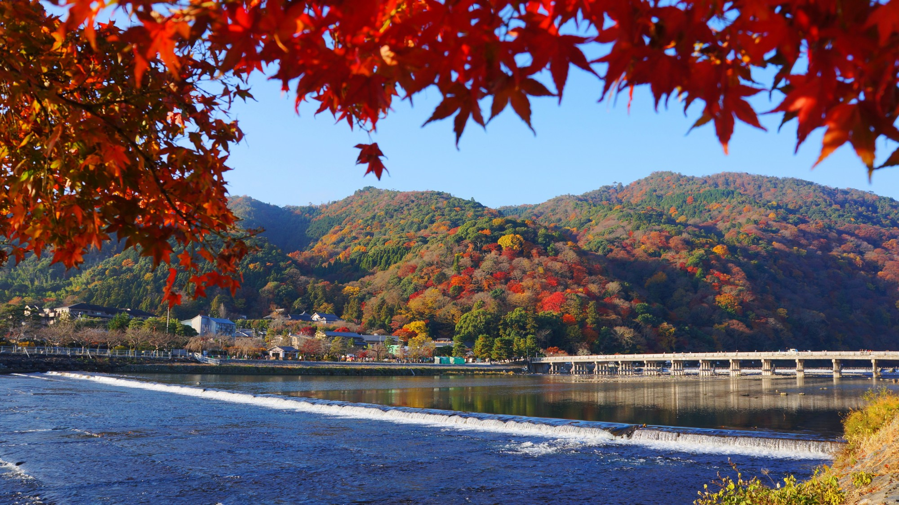
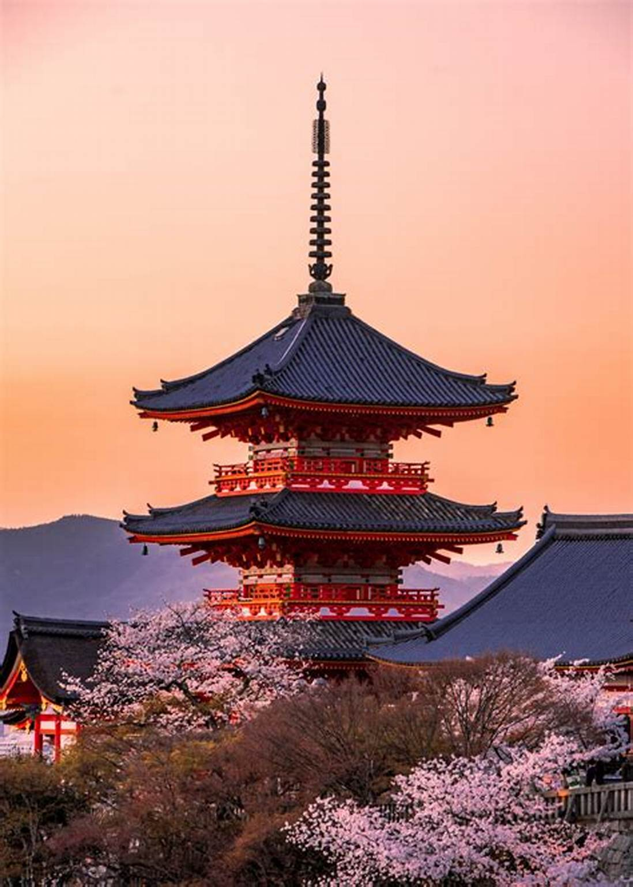
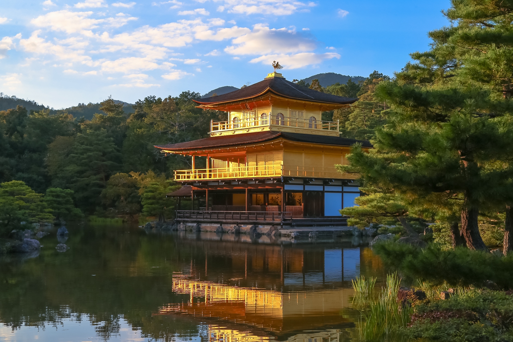
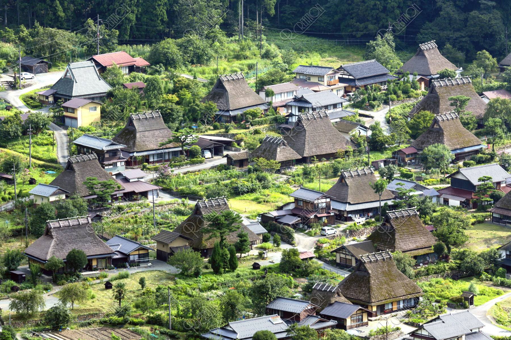
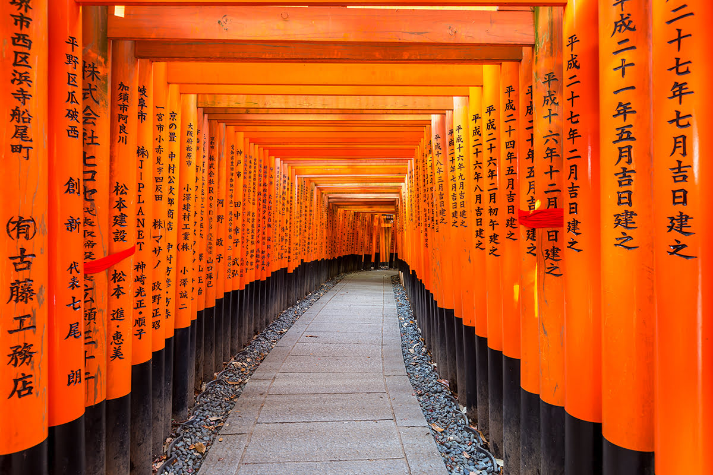
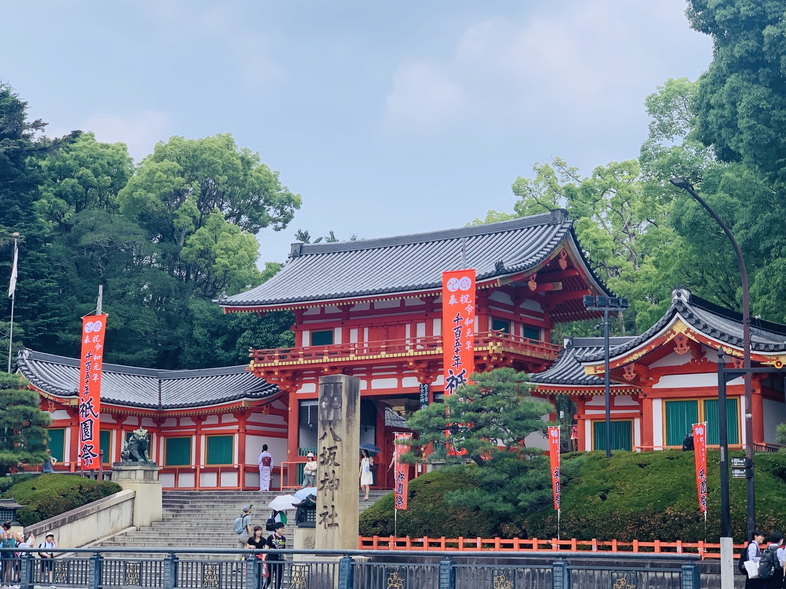
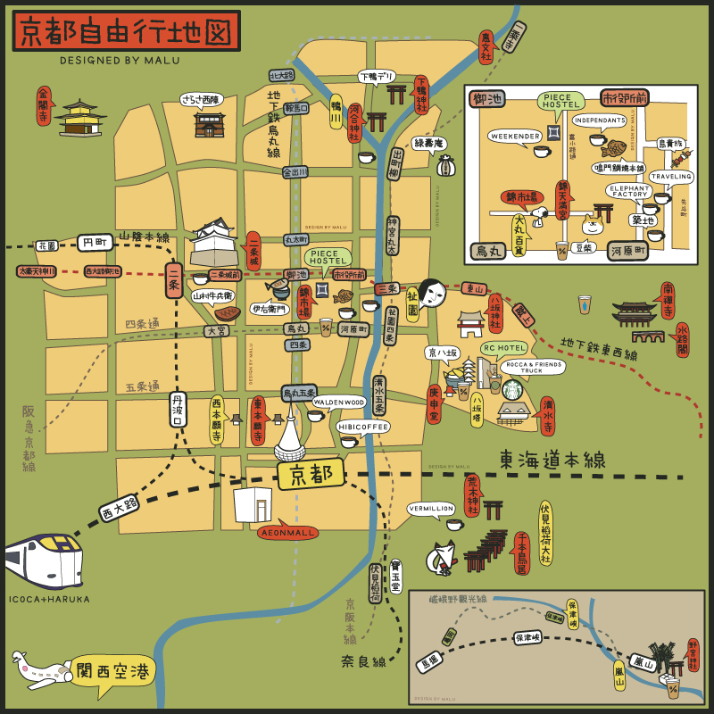

京都
京都是位於日本近畿地方的古老都市，歷史起於8世紀建立的「平安京」。自794年成為日本首都以來，京都一直是政治、文化中心，至1869年遷都東京為止。在京都，你可以欣賞宏偉的神社、古老的城蹟、傳統日式旅館，品嚐美味的京都料理，並探索千本鳥居的伏見稻荷大社。此外，嵐山的竹林小徑、金閣寺、錦市場等景點也值得一遊
以下是日本知名景點
嵐山:

嵐山位於京都的西北地方，以世界聞名的竹林和隨季節變化的美麗風景吸引著眾多遊客。這個地區散佈著寺廟、古老的皇家別墅和著名的歷史古跡，許多都屬於國寶級，甚至是公認的世界遺產。整個地區都已被日本政府指定為風景名勝區。嵐山的景點包括竹林小路、天龍寺、渡月橋、嵯峨野小火車等，是一個不可錯過的觀光勝地
嵐山
清水寺：

清水寺（英文：Kiyomizu-dera）位於京都市東山區的音羽山半山腰，是一座極具歷史價值的古老寺廟。它供奉千手觀音，始建於西元778年，但因戰爭和災難而多次受損。1633年，德川家族重新修繕了清水寺，使其成為現今的樣貌。1944年，清水寺被聯合國教科文組織列入「世界文化遺產」。這座寺廟在日本文學作品《源氏物語》和《枕草子》中也有描寫，是許多日本迷必看的京都景點。清水寺境內有國寶「本堂」，以及國家重要文化財產「仁王門」、「西門」、「鐘樓」和「三重塔」等30多座廟堂及石碑
清水寺
金閣寺：

金閣寺（正式名稱為鹿苑寺）位於京都市，是源自禪宗的臨濟宗相國寺派的古剎。1397年由第三代幕府將軍足利義滿建造，以金碧輝煌的「舍利殿」、碧綠的「鏡湖池」和樹齡約600年的五葉松等景點而聞名。金閣寺的正式名稱是「鹿苑寺」，而「金閣寺」是俗稱，因為寺內有一座金碧輝煌的建築物，即「金閣」。
金閣寺
京都美山町：

美山町位於京都府中心位置的南丹市，距離京都市中心以北約30公里。這個遺世獨立的地方以日式傳統茅草屋頂房舍「茅葺屋」而聞名。美山擁有清新的山間空氣、靜謐的氣氛和懷舊氣息，是遠離城市喧囂的最佳去處。美山町的合掌村保留了50戶建築，其中有38戶是茅葺民家，其美景絕不輸給白川鄉
京都美山町
京都塔

京都塔（京都タワー）位於JR京都車站中央口正對面，是京都當地重要的觀光樞紐。它連接著JR、近鐵、新幹線，並且直通市內地下鐵，交通上相當便利。京都塔的外觀以燈塔作為主設計，塔內自地下1樓至地上11樓，設有商店、餐廳、伴手禮商店等設施。展望台位於3樓到5樓，能眺望360度的市內景觀，絕對是來到京都旅遊值得造訪的景點之一
京都塔
伏見稻荷大社:(千本鳥居)

伏見稻荷大社位於京都市伏見區的稻荷山上，是日本全國約3萬座稻荷神社的總本宮。這裡供奉著保佑五穀豐收、生意興隆的稻荷大神。最令人印象深刻的景點是由眾多鳥居組成的朱紅色甬道，被稱為千本鳥居，是日本最著名的景觀之一
伏見稻荷大社
八坂神社

大阪的難波八阪神社位於浪速區，是一處相對較少人知的私房景點。這座神社擁有一座超吸睛的巨無霸獅子頭，讓人印象深刻。獅子的巨大口被傳說能吞噬邪氣，因此吸引了許多前來祈願學業進步、就業內定和考試合格的參拜者
八阪神社
這是關於大阪和京都的自由行影片
京都景點地圖
